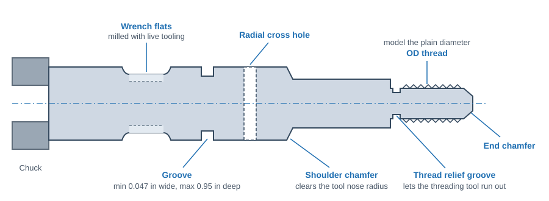
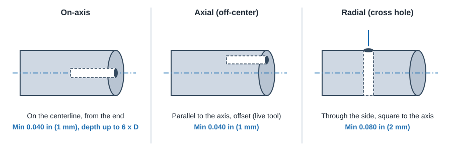

CNC Machining
CNC Turning (Lathe)
If a part is mostly round, turn it from bar stock. Turning is usually cheaper than milling a round part out of a block, gives a smoother and rounder surface, and live tooling adds flats, cross holes and slots in the same setup.
Turn or mill?
Good lathe parts
- Shafts, pins, pistons, spacers, bushings, nozzles
- Hydraulic fittings and hose barbs (V-grooves use a standard tool)
- Long parts several times longer than their diameter
- Recessed grip areas and wide grooves (simple grooving)
- Round parts with a few flats or cross holes (live tooling)
Better on a mill
- Rectangular bodies, manifolds, brackets, housings
- Parts with handles or lugs sticking out of a round body
- Large flat faces with detailed pockets
- Face patterns that are not on the turning axis (cut-outs like wheel spokes can go either way)
Rule of thumb: if you picture the part spinning on its long axis and most surfaces are circles around that axis, it is a lathe part. A pint glass or soup can turns easily; a coffee mug with a handle does not.
Typical lathe capability
| Feature | Automated lathe guideline |
|---|---|
| Maximum part size | 3.95 in diameter x 9 in long (100 x 228 mm) |
| Minimum part size | 0.16 in diameter x 0.050 in long (4 x 1.3 mm) |
| Conical points | Included angle greater than 30° |
| On-axis and axial holes | Minimum 0.040 in (1 mm) diameter, depth up to 6x diameter |
| Radial (cross) holes | Minimum 0.080 in (2 mm) diameter |
| External grooves | No narrower than 0.047 in (1.2 mm), no deeper than 0.95 in (24 mm) |
| Milled grooves / slots (live tool) | Wider than 0.047 in (1.2 mm) |
| Text | Raised text preferred; stroke and spacing at least 0.020 in (0.5 mm) |
| Materials | Aluminum, brass, copper, low carbon and alloy steel, stainless, titanium (this vendor turns metals only) |
| Large turning (network shops) | Up to about 32 in diameter x 62 in long (813 x 1575 mm) |
Values are published limits from automated (ProtoLabs) and network (Xometry) services. A local job shop's limits depend on its machines and bar feeder.
Features on a turned part

- Inside shoulders: the turning insert leaves a small nose radius (about 0.016 in / 0.4 mm). Add a chamfer or radius to the mating part's bore or edge so it seats against the shoulder.
- Thread run-out: leave a relief groove or unthreaded length at the end of an OD thread next to a shoulder.
- Chamfer the ends of shafts and the entries of bores. Lathes do this almost for free.
- Live-tool features (flats, cross holes, keyways, slots) should be parallel or perpendicular to the part axis. A Y-axis lathe can place them off-center.
- Keep diameters stepping one way where possible (largest at the chuck end) so the part can be cut in one chucking and parted off.
On-axis, axial and radial holes

- On-axis holes are drilled and bored on the spindle centerline. Most accurate and concentric.
- Axial holes run parallel to the axis but off-center (for example a bolt circle on a flange face). Cut with live tooling.
- Radial holes go through the side, square to the axis. Add a small flat if the hole must start on a curved surface with a clean edge.
- Through holes on long or tubular parts may need drilling from both ends; check the DFM feedback.
Threads on turned parts
- External (OD) threads: model the plain shaft at the diameter listed in the OD thread table (just under the major diameter), and do not model the thread. Assign the thread in the quote or call it out on the drawing. See the OD thread table.
- Internal threads: model the pilot (tap drill) diameter. See Hole & Thread Design Rules.
- Turned OD threads are cut with a single-point tool on the part centerline and are far better than threads milled on a 3-axis machine.
Design tips for cheaper turned parts
- Start from standard bar sizes. Make the largest diameter slightly under a common bar size so the outside can clean up. See round bar sizes.
- Avoid deep, narrow internal grooves and internal features far from the open end; boring bars deflect as they get longer.
- Keep length to diameter reasonable. Long slender parts (over about 4 : 1 unsupported) need a tailstock or steady rest.
- Use standard groove widths for retaining rings and O-rings, and standard drill sizes for holes.
- Turning plastics is possible at job shops; some automated services turn metals only and mill plastic round parts instead.
ProtoLabs CNC turning design guidelines · ProtoLabs: complex features on machined parts · ProtoLabs Design Essentials and Definitive Guide to CNC Machining · Xometry CNC Machining Design Guide (lathe size limits).